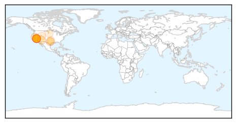
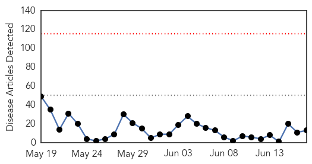
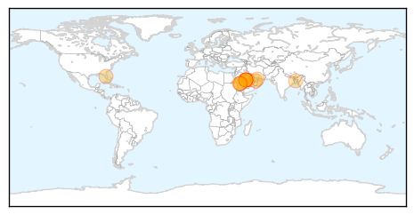

Pertussis
30-Day Web Trend
3 alerts, 0 warnings

30-Day Twitter Trend
0 alerts, 0 warnings

Article Locations
Article Confidences

Top Articles:
- 0.981
- Whooping Cough Epidemic Strikes California: 800 Cases In Past Two Weeks
- 0.927
- Whooping cough reaches epidemic levels in California
- 0.926
- California's deadly whooping cough epidemic blamed on anti-vaccine campaign — RT USA
- 0.923
- California hit by whooping cough epidemic
- 0.907
- California Facing Whooping Cough Epidemic: High Infection Risk for Children
- 0.875
- California currently experiencing Whooping cough epidemic
- 0.849
- Arizona whooping-cough cases down; California faces epidemic
- 0.845
- Queen of the Valley restricts visits due to whooping cough
- 0.759
- California Facing a Whooping Cough Epidemic
- 0.614
- Pertussis Cases on Track to Reach Record Numbers in Tarrant County
- 0.573
- Whooping Cough Declared Epidemic In California, Utah Still Ok
- 0.541
- Black Hills Pioneer: Local News
Top Tweets:
-
No tweets found for Jun 17, 2014
MERS
30-Day Web Trend
0 alerts, 0 warnings

30-Day Twitter Trend
1 alerts, 0 warnings

Article Locations
Article Confidences

Top Articles:
- 0.999
- Two Cases Of MERS CoV Infection Reported In Saudi Arabia
- 0.999
- MERS is Abating, But Still Could Threaten Hajj
- 0.999
- US MERS Patients Did Not Spread Virus in Hospitals or Homes
- 0.999
- WHO panel still sees no MERS emergency
- 0.997
- WHO statement on the Sixth Meeting of the IHR Emergency Committee concerning MERS-CoV
- 0.996
- MERS virus suspected in Port Sudan - Sudan
- 0.995
- UAE has played a major role in tackling Mers, global health chiefs say
- 0.995
- Morocco Recommends Its Citizens to Cancel Their Pilgrimage to Mecca
- 0.994
- Americans infected with MERS have not spread disease, CDC says
- 0.993
- U.S. MERS patients did not infect families, hospital workers
- 0.975
- Personal hygiene can prevent MERS
- 0.955
- MERS virus reported in Bangladesh
- 0.909
- Dubai tests 1,000 camels to conduct Mers study
Top Tweets:
-
No tweets found for Jun 17, 2014